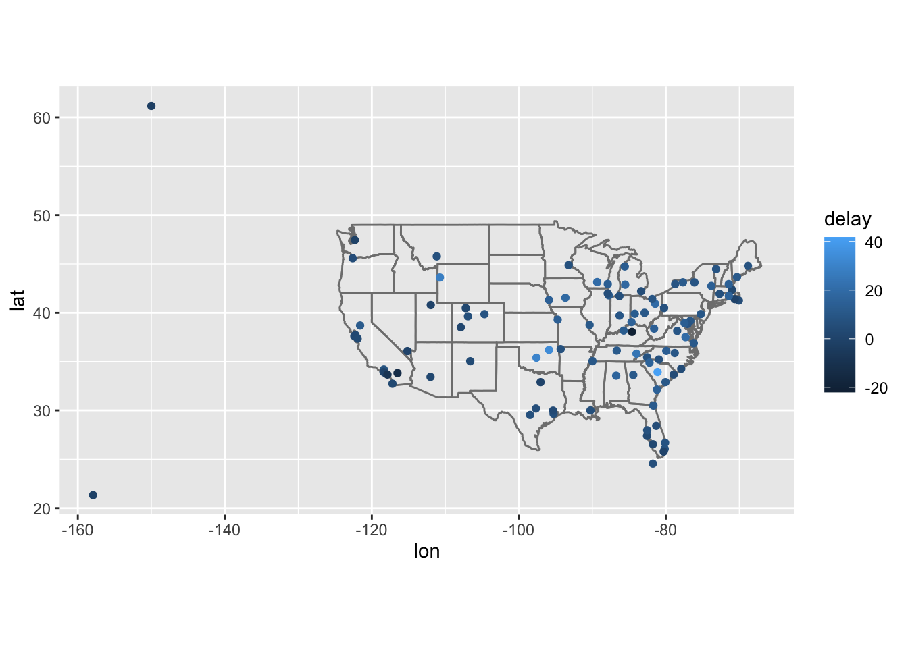

Chapter 14 Relational data
一对表格之间总是存在定义关系。要处理关系数据，我们需要与一对表一起工作的动词。有三家族动词设计用于处理关系数据：
- 突变连接，它从另一个数据帧的匹配观测中向一个数据帧添加新变量。
- 过滤连接，根据它们是否与另一个表中的观察结果匹配，从一个数据帧过滤观测结果。
- 集合操作，将观察视为集合元素。
library(tidyverse)
library(nycflights13)14.1 理解合并数据概念
14.1.1 类型1：没有重复问题
x <- tribble(
~key, ~val_x,
1, "x1",
2, "x2",
3, "x3"
)
y <- tribble(
~key, ~val_y,
1, "y1",
2, "y2",
4, "y3"
)内联（inner-join）：只观察共同包含的数据（交集）。事实上因为会丢掉不匹配的数据，所以不便于分析。
inner_join(x, y, by = "key")
#> # A tibble: 2 × 3
#> key val_x val_y
#> <dbl> <chr> <chr>
#> 1 1 x1 y1
#> 2 2 x2 y2外联（left-join、right-join、full-join）：共三种连接方式语句。
left_join(x, y, by = "key") # 左连接，保留左侧丢掉右侧不匹配的数据
#> # A tibble: 3 × 3
#> key val_x val_y
#> <dbl> <chr> <chr>
#> 1 1 x1 y1
#> 2 2 x2 y2
#> 3 3 x3 <NA>
right_join(x, y, by = "key") # 右连接，保留右侧丢掉左侧不匹配的数据
#> # A tibble: 3 × 3
#> key val_x val_y
#> <dbl> <chr> <chr>
#> 1 1 x1 y1
#> 2 2 x2 y2
#> 3 4 <NA> y3
full_join(x, y, by = "key") # 全连接，保留全部数据，哪怕不互相匹配
#> # A tibble: 4 × 3
#> key val_x val_y
#> <dbl> <chr> <chr>
#> 1 1 x1 y1
#> 2 2 x2 y2
#> 3 3 x3 <NA>
#> 4 4 <NA> y3匹配演算（semi_join、anti_join）：事实上匹配并不会做数据合并，只是把左侧数据做筛选。
semi_join(x, y, by = "key") # 半连接，对左侧数据筛选出右侧数据能匹配的数据
#> # A tibble: 2 × 2
#> key val_x
#> <dbl> <chr>
#> 1 1 x1
#> 2 2 x2
anti_join(x, y, by = "key") # 反连接，对左侧数据排除掉右侧数据能匹配的数据
#> # A tibble: 1 × 2
#> key val_x
#> <dbl> <chr>
#> 1 3 x314.1.2 类型2：一边有重复问题
x <- tribble(
~key, ~val_x,
1, "x1",
2, "x2",
2, "x3",
1, "x4"
)
y <- tribble(
~key, ~val_y,
1, "y1",
2, "y2"
)事实上下面两种模式结果相同：
left_join(x, y, by = "key") # 左边所有列都从右边寻求
#> # A tibble: 4 × 3
#> key val_x val_y
#> <dbl> <chr> <chr>
#> 1 1 x1 y1
#> 2 2 x2 y2
#> 3 2 x3 y2
#> 4 1 x4 y1
right_join(x, y, by = "key") # 右边所有列都从左边寻求（一对多时全保留）
#> # A tibble: 4 × 3
#> key val_x val_y
#> <dbl> <chr> <chr>
#> 1 1 x1 y1
#> 2 2 x2 y2
#> 3 2 x3 y2
#> 4 1 x4 y114.1.3 类型3：两边都有重复问题
x <- tribble(
~key, ~val_x,
1, "x1",
2, "x2",
2, "x3",
3, "x4"
)
y <- tribble(
~key, ~val_y,
1, "y1",
2, "y2",
2, "y3",
3, "y4"
)左边某列对应到右边出现多个结果时会新增列去对应：
left_join(x, y, by = "key")
#> # A tibble: 6 × 3
#> key val_x val_y
#> <dbl> <chr> <chr>
#> 1 1 x1 y1
#> 2 2 x2 y2
#> 3 2 x2 y3
#> 4 2 x3 y2
#> 5 2 x3 y3
#> 6 3 x4 y414.2 理解多种数据合并方式
事实上，四大 join 相关依赖包 dplyr，我们也可以用 r 原生自带的 base::merge 实现：
| dplyr 语句 | 对应的 merge 语句 | 解释 |
|---|---|---|
| inner_join(x, y) | merge(x, y) | 匹配不上的均不保留 |
| left_join(x, y) | merge(x, y, all.x = TRUE) | 保留所有的 x |
| right_join(x, y) | merge(x, y, all.y = TRUE), | 保留所有的 y |
| full_join(x, y) | merge(x, y, all.x = TRUE, all.y = TRUE) | 保留所有的 x 和 y |
14.3 设置操作
intersect、union 和 setdiff 用于对不同表格的差异进行挖掘：
df1 <- tribble(
~x, ~y,
1, 1,
2, 1
)
df2 <- tribble(
~x, ~y,
1, 1,
1, 2
)
intersect(df1, df2) # 返回两者共同的数据集
#> # A tibble: 1 × 2
#> x y
#> <dbl> <dbl>
#> 1 1 1
union(df1, df2) # 合并两个数据集的数据（相同的只做一次记录）
#> # A tibble: 3 × 2
#> x y
#> <dbl> <dbl>
#> 1 1 1
#> 2 2 1
#> 3 1 2
setdiff(df1, df2) # 返回前者观察到的后者所没有的差异部分
#> # A tibble: 1 × 2
#> x y
#> <dbl> <dbl>
#> 1 2 1
setdiff(df2, df1)
#> # A tibble: 1 × 2
#> x y
#> <dbl> <dbl>
#> 1 1 214.4 合并 nycflights 数据并分析
仔细观察 nycflights 不难发现，里面包含 airlines、airports、planes 和 weather，以及我们常用的 flights 数据集。
airlines 允许您从其缩写代码中查找完整的运营商名称：
airlines
#> # A tibble: 16 × 2
#> carrier name
#> <chr> <chr>
#> 1 9E Endeavor Air Inc.
#> 2 AA American Airlines Inc.
#> 3 AS Alaska Airlines Inc.
#> 4 B6 JetBlue Airways
#> 5 DL Delta Air Lines Inc.
#> 6 EV ExpressJet Airlines Inc.
#> 7 F9 Frontier Airlines Inc.
#> 8 FL AirTran Airways Corporation
#> 9 HA Hawaiian Airlines Inc.
#> 10 MQ Envoy Air
#> 11 OO SkyWest Airlines Inc.
#> 12 UA United Air Lines Inc.
#> 13 US US Airways Inc.
#> 14 VX Virgin America
#> 15 WN Southwest Airlines Co.
#> 16 YV Mesa Airlines Inc.airports 提供有关每个机场的信息，由 faa 机场代码标识：
airports
#> # A tibble: 1,458 × 8
#> faa name lat lon alt tz dst tzone
#> <chr> <chr> <dbl> <dbl> <dbl> <dbl> <chr> <chr>
#> 1 04G Lansdowne Airport 41.1 -80.6 1044 -5 A America/…
#> 2 06A Moton Field Municipal Airport 32.5 -85.7 264 -6 A America/…
#> 3 06C Schaumburg Regional 42.0 -88.1 801 -6 A America/…
#> 4 06N Randall Airport 41.4 -74.4 523 -5 A America/…
#> 5 09J Jekyll Island Airport 31.1 -81.4 11 -5 A America/…
#> 6 0A9 Elizabethton Municipal Airport 36.4 -82.2 1593 -5 A America/…
#> 7 0G6 Williams County Airport 41.5 -84.5 730 -5 A America/…
#> 8 0G7 Finger Lakes Regional Airport 42.9 -76.8 492 -5 A America/…
#> 9 0P2 Shoestring Aviation Airfield 39.8 -76.6 1000 -5 U America/…
#> 10 0S9 Jefferson County Intl 48.1 -123. 108 -8 A America/…
#> # … with 1,448 more rowsplanes 提供有关每个平面的信息，由其 tailnum 标识：
planes
#> # A tibble: 3,322 × 9
#> tailnum year type manufacturer model engines seats speed engine
#> <chr> <int> <chr> <chr> <chr> <int> <int> <int> <chr>
#> 1 N10156 2004 Fixed wing multi… EMBRAER EMB-… 2 55 NA Turbo…
#> 2 N102UW 1998 Fixed wing multi… AIRBUS INDU… A320… 2 182 NA Turbo…
#> 3 N103US 1999 Fixed wing multi… AIRBUS INDU… A320… 2 182 NA Turbo…
#> 4 N104UW 1999 Fixed wing multi… AIRBUS INDU… A320… 2 182 NA Turbo…
#> 5 N10575 2002 Fixed wing multi… EMBRAER EMB-… 2 55 NA Turbo…
#> 6 N105UW 1999 Fixed wing multi… AIRBUS INDU… A320… 2 182 NA Turbo…
#> 7 N107US 1999 Fixed wing multi… AIRBUS INDU… A320… 2 182 NA Turbo…
#> 8 N108UW 1999 Fixed wing multi… AIRBUS INDU… A320… 2 182 NA Turbo…
#> 9 N109UW 1999 Fixed wing multi… AIRBUS INDU… A320… 2 182 NA Turbo…
#> 10 N110UW 1999 Fixed wing multi… AIRBUS INDU… A320… 2 182 NA Turbo…
#> # … with 3,312 more rowsweather 则给出了每个纽约机场每小时的天气：
weather
#> # A tibble: 26,115 × 15
#> origin year month day hour temp dewp humid wind_dir wind_speed
#> <chr> <int> <int> <int> <int> <dbl> <dbl> <dbl> <dbl> <dbl>
#> 1 EWR 2013 1 1 1 39.0 26.1 59.4 270 10.4
#> 2 EWR 2013 1 1 2 39.0 27.0 61.6 250 8.06
#> 3 EWR 2013 1 1 3 39.0 28.0 64.4 240 11.5
#> 4 EWR 2013 1 1 4 39.9 28.0 62.2 250 12.7
#> 5 EWR 2013 1 1 5 39.0 28.0 64.4 260 12.7
#> 6 EWR 2013 1 1 6 37.9 28.0 67.2 240 11.5
#> 7 EWR 2013 1 1 7 39.0 28.0 64.4 240 15.0
#> 8 EWR 2013 1 1 8 39.9 28.0 62.2 250 10.4
#> 9 EWR 2013 1 1 9 39.9 28.0 62.2 260 15.0
#> 10 EWR 2013 1 1 10 41 28.0 59.6 260 13.8
#> # … with 26,105 more rows, and 5 more variables: wind_gust <dbl>, precip <dbl>,
#> # pressure <dbl>, visib <dbl>, time_hour <dttm>它们的关系图如下：

relational-nycflights
我们首先对数据集进行精简：
flights_smaller <- flights %>%
select(year:day, hour, origin, dest, tailnum, carrier)由于 carrier 没有补全，所以我们决定联合 airlines 数据集进行选择性合并：
flights_smaller %>%
select(-c(origin, dest)) %>%
# 根据别的数据集在右侧补全数据，依据 / 重叠数据为 carrier
left_join(airlines, by = "carrier")
#> # A tibble: 336,776 × 7
#> year month day hour tailnum carrier name
#> <int> <int> <int> <dbl> <chr> <chr> <chr>
#> 1 2013 1 1 5 N14228 UA United Air Lines Inc.
#> 2 2013 1 1 5 N24211 UA United Air Lines Inc.
#> 3 2013 1 1 5 N619AA AA American Airlines Inc.
#> 4 2013 1 1 5 N804JB B6 JetBlue Airways
#> 5 2013 1 1 6 N668DN DL Delta Air Lines Inc.
#> 6 2013 1 1 5 N39463 UA United Air Lines Inc.
#> 7 2013 1 1 6 N516JB B6 JetBlue Airways
#> 8 2013 1 1 6 N829AS EV ExpressJet Airlines Inc.
#> 9 2013 1 1 6 N593JB B6 JetBlue Airways
#> 10 2013 1 1 6 N3ALAA AA American Airlines Inc.
#> # … with 336,766 more rows当然我们也可以使用 mutate + match 实现同样效果：
flights_smaller %>%
select(-c(origin, dest)) %>%
mutate(
# 从 airlines 的 name 向量获取数据，赋值到新列 “name”
name = airlines$name[match(
# 获取的数据通过 match 控制
# 通过 filghts 的 carrier 匹配数据，返回对应 airlines 的 carrier
carrier, airlines$carrier
)]
)
#> # A tibble: 336,776 × 7
#> year month day hour tailnum carrier name
#> <int> <int> <int> <dbl> <chr> <chr> <chr>
#> 1 2013 1 1 5 N14228 UA United Air Lines Inc.
#> 2 2013 1 1 5 N24211 UA United Air Lines Inc.
#> 3 2013 1 1 5 N619AA AA American Airlines Inc.
#> 4 2013 1 1 5 N804JB B6 JetBlue Airways
#> 5 2013 1 1 6 N668DN DL Delta Air Lines Inc.
#> 6 2013 1 1 5 N39463 UA United Air Lines Inc.
#> 7 2013 1 1 6 N516JB B6 JetBlue Airways
#> 8 2013 1 1 6 N829AS EV ExpressJet Airlines Inc.
#> 9 2013 1 1 6 N593JB B6 JetBlue Airways
#> 10 2013 1 1 6 N3ALAA AA American Airlines Inc.
#> # … with 336,766 more rows而如果要与 weather 并接：
flights_smaller %>%
left_join(weather) # 如果不写 by，则为默认 NULL，会将左边所有列往右边对应一遍，相当于下面代码：
#> Joining, by = c("year", "month", "day", "hour", "origin")
#> # A tibble: 336,776 × 18
#> year month day hour origin dest tailnum carrier temp dewp humid
#> <int> <int> <int> <dbl> <chr> <chr> <chr> <chr> <dbl> <dbl> <dbl>
#> 1 2013 1 1 5 EWR IAH N14228 UA 39.0 28.0 64.4
#> 2 2013 1 1 5 LGA IAH N24211 UA 39.9 25.0 54.8
#> 3 2013 1 1 5 JFK MIA N619AA AA 39.0 27.0 61.6
#> 4 2013 1 1 5 JFK BQN N804JB B6 39.0 27.0 61.6
#> 5 2013 1 1 6 LGA ATL N668DN DL 39.9 25.0 54.8
#> 6 2013 1 1 5 EWR ORD N39463 UA 39.0 28.0 64.4
#> 7 2013 1 1 6 EWR FLL N516JB B6 37.9 28.0 67.2
#> 8 2013 1 1 6 LGA IAD N829AS EV 39.9 25.0 54.8
#> 9 2013 1 1 6 JFK MCO N593JB B6 37.9 27.0 64.3
#> 10 2013 1 1 6 LGA ORD N3ALAA AA 39.9 25.0 54.8
#> # … with 336,766 more rows, and 7 more variables: wind_dir <dbl>,
#> # wind_speed <dbl>, wind_gust <dbl>, precip <dbl>, pressure <dbl>,
#> # visib <dbl>, time_hour <dttm>
# left_join(weather, by = c("year", "month", "day", "hour", "origin"))事实上 “by =” 可以省略。如果筛选变量填入了用等于连接的向量，则是左右都指定了列：
flights_smaller %>%
# flighs_smaller 的 dest 列与 airports 的 faa 列比较、对应和连接
left_join(airports, c("dest" = "faa"))
#> # A tibble: 336,776 × 15
#> year month day hour origin dest tailnum carrier name lat lon alt
#> <int> <int> <int> <dbl> <chr> <chr> <chr> <chr> <chr> <dbl> <dbl> <dbl>
#> 1 2013 1 1 5 EWR IAH N14228 UA Georg… 30.0 -95.3 97
#> 2 2013 1 1 5 LGA IAH N24211 UA Georg… 30.0 -95.3 97
#> 3 2013 1 1 5 JFK MIA N619AA AA Miami… 25.8 -80.3 8
#> 4 2013 1 1 5 JFK BQN N804JB B6 <NA> NA NA NA
#> 5 2013 1 1 6 LGA ATL N668DN DL Harts… 33.6 -84.4 1026
#> 6 2013 1 1 5 EWR ORD N39463 UA Chica… 42.0 -87.9 668
#> 7 2013 1 1 6 EWR FLL N516JB B6 Fort … 26.1 -80.2 9
#> 8 2013 1 1 6 LGA IAD N829AS EV Washi… 38.9 -77.5 313
#> 9 2013 1 1 6 JFK MCO N593JB B6 Orlan… 28.4 -81.3 96
#> 10 2013 1 1 6 LGA ORD N3ALAA AA Chica… 42.0 -87.9 668
#> # … with 336,766 more rows, and 3 more variables: tz <dbl>, dst <chr>,
#> # tzone <chr>分析绘图机场在美国的分布图和到达此处的飞机的延误整体状况：
avg_dest_delays <-
flights %>%
group_by(dest) %>%
# 新的列 delay 取值为各目的地的 arr_delay（到达延误）的平均值
summarise(delay = mean(arr_delay, na.rm = TRUE)) %>% # 注意可能存在 NA 值，需要剔除
# 注意向量内左侧数据其实打不打引号都是可以的，但右侧必须打
inner_join(airports, by = c(dest = "faa")) # 其中 faa 为机场代码
avg_dest_delays
#> # A tibble: 101 × 9
#> dest delay name lat lon alt tz dst tzone
#> <chr> <dbl> <chr> <dbl> <dbl> <dbl> <dbl> <chr> <chr>
#> 1 ABQ 4.38 Albuquerque International S… 35.0 -107. 5355 -7 A Amer…
#> 2 ACK 4.85 Nantucket Mem 41.3 -70.1 48 -5 A Amer…
#> 3 ALB 14.4 Albany Intl 42.7 -73.8 285 -5 A Amer…
#> 4 ANC -2.5 Ted Stevens Anchorage Intl 61.2 -150. 152 -9 A Amer…
#> 5 ATL 11.3 Hartsfield Jackson Atlanta … 33.6 -84.4 1026 -5 A Amer…
#> 6 AUS 6.02 Austin Bergstrom Intl 30.2 -97.7 542 -6 A Amer…
#> 7 AVL 8.00 Asheville Regional Airport 35.4 -82.5 2165 -5 A Amer…
#> 8 BDL 7.05 Bradley Intl 41.9 -72.7 173 -5 A Amer…
#> 9 BGR 8.03 Bangor Intl 44.8 -68.8 192 -5 A Amer…
#> 10 BHM 16.9 Birmingham Intl 33.6 -86.8 644 -6 A Amer…
#> # … with 91 more rows
avg_dest_delays %>%
# lat 和 lon 为机场的经度和纬度信息，颜色代表平均延迟时长
ggplot(mapping = aes(lon, lat, colour = delay)) +
borders("state") + # 这一句话是在加入美国地图背板
geom_point() + # 显示机场位置分布
coord_quickmap() # 保持地图横纵比，防止实际图片拉伸导致的地图变形
分析合并出发地的延误状况：
airport_locations <- airports %>%
select(faa, lat, lon)
flights %>%
select(year:day, hour, origin, dest) %>%
# 注意这样 origin 和 dest 都由对应的经纬度坐标数据，存在命名冲突
# 实际运行时，运行到下面的 left_join 会发现，dplyr 会自动给旧列名加上 “.x”，新列名 “.y”
# left_join(
# airport_locations,
# by = c("dest" = "faa")
# )
# 所以我们使用 suffix 覆盖这个默认行为设置的后缀
left_join(
airport_locations,
by = c("dest" = "faa"),
suffix = c("_origin", "_dest")
)
#> # A tibble: 336,776 × 8
#> year month day hour origin dest lat lon
#> <int> <int> <int> <dbl> <chr> <chr> <dbl> <dbl>
#> 1 2013 1 1 5 EWR IAH 30.0 -95.3
#> 2 2013 1 1 5 LGA IAH 30.0 -95.3
#> 3 2013 1 1 5 JFK MIA 25.8 -80.3
#> 4 2013 1 1 5 JFK BQN NA NA
#> 5 2013 1 1 6 LGA ATL 33.6 -84.4
#> 6 2013 1 1 5 EWR ORD 42.0 -87.9
#> 7 2013 1 1 6 EWR FLL 26.1 -80.2
#> 8 2013 1 1 6 LGA IAD 38.9 -77.5
#> 9 2013 1 1 6 JFK MCO 28.4 -81.3
#> 10 2013 1 1 6 LGA ORD 42.0 -87.9
#> # … with 336,766 more rows